Hey there! So, this processes your text and gives you the Draconic Runes in png (all hand made for this, based on your own runes on the journal you gave me).
I also added a few commands (listed below) that allow you to auto-add the visuals to your recipe. If there are any other actions/commands youd like to get added, just lmk
Usable on mobile but not yet mobile-friendly.
Have fun!
| ~shake ou ~coquetelar | 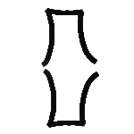 |
| ~mix | |
| ~top | |
| ~dash | 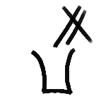 |
| ~splash | 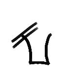 |
| ~strain | 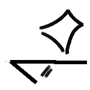 |
| ~ice | |
| ~fire | 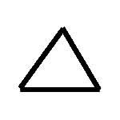 |
| ~foam | |
| ~dstrain, ~ds, ~doublestrain ou ~double-strain | 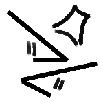 |
| ~macerate ou ~macerar | 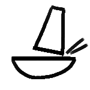 |
| ~bspoon, ~spoon, ~barspoon ou ~bar-spoon | 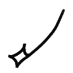 |
| ~glass | 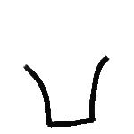 |
| ~glass-type | 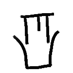 |
| ~glass-desc | 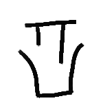 |